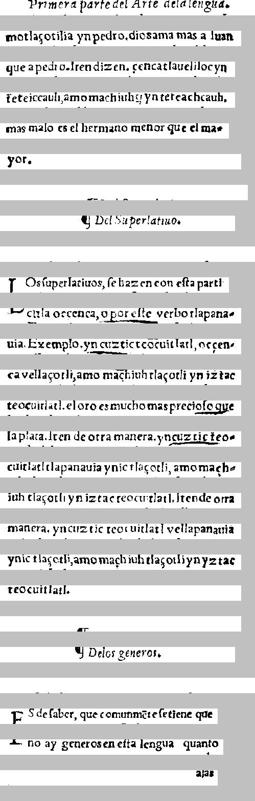

   Primera Parro?" "¿H* * * * * * * * * * * S44 -  
primera parte del Arte de la lengua.

  motlacotilia yn pedro . diR9499494s a Iuan 
motla\ccotilia ynpedrio. dios ama mas a Iuan

 que apedro- hendizen. F5054tlaueliloc yn 
que a pedro. Iten dizen. cencatlauelilocyn

 teteiccauh amomachiuh D79 t954chcauh: 
teteiccauh,amomachiuh ynteteachcauh.

  mas malo es el hermano m5094 GPetl ma- 
mas malo es el hermano menor que el ma-

 yor-            
yor.

                


     II. De los Per|arian-   
        ¶Del Superlatiuo.

               


  l Os |uperlatinos, |e hazen con e|ta parti 
LOs |uperlatiuos, |e hazen con e|ta parti

 *:' et tla oc cenca.o EoLLLE, verbo tlapana- 
cula occenca, o por e|te verbo tlapana-

 ma. Exemplo . yn coztic teocuitlatl, oc cen- 
uia. Exemplo. yn cuzticteocuitlatl, occen-

 ca vellacotli, amo machiuhtlacotli yn iztac 
cavella\ccotli, amo machiuh tla\ccotil yn iztac

 teucuitlatl, el oro es mucho mas precio 125lle 
teocuitlatl. el oro es mucho mas precio|o que

 la Plata. Iten de otra manera, yn15211LI1o- 
la plata. I ten de otra manera. yncuztic teo-

 cuitlatl tlapana-uia ynic tlacotli, amomach- 
cuitlatl tlapanauia ynic tla\ccotli, amo mach-

 iuh tlacotli yn iztac teocuitlatl, iten de otra 
iuh tla\ccotli yn izteacteocuitlatl. I tende otra

 934094. yn cuztic teocuitlatl vellapanani4 
manera. yncuztic teocuitlatl vellapanauia

 7035 tlacotli, amo mach iuh tlacotli yn yztac 
ynic tla\ccotli, amo machiuh tla\ccotliynyztac

 t5994 itlatl:          
teocuitlatl.

     ....         


     II. De los generos,     
        ¶Delos generos.

               


 32 5 de |aber, que comunmete |e tiene que 
Es de |aber, que comunmete |e tiene que

 T5 99 97 89399494944 le9894 G94949 
no ay generos en e|ta lengua  quanto

           49I 
                    alas


===============================================


   [spanish Primera Parro?" "¿H* * * * * * * * * * * ][nahuatl S44 -  
  motlacotilia yn pedro . diR9499494s a Iuan 
 ][spanish que apedro- hendizen. ][nahuatl F5054tlaueliloc yn 
 teteiccauh amomachiuh D79 t954chcauh: 
  ][spanish mas malo es el hermano ][nahuatl m5094 GPetl ma- 
 yor-            
                
][null      [spanish II. De los Per|arian-   
               
  l Os |uperlatinos, |e hazen con e|ta parti 
 ][latin *:' et ][nahuatl tla oc cenca.o EoLLLE, ][latin verbo ][nahuatl tlapana- 
 ma. ][latin Exemplo ][nahuatl . yn coztic teocuitlatl, oc cen- 
 ca vellacotli, amo machiuhtlacotli yn iztac 
 teucuitlatl, ][spanish el oro es mucho mas precio 125lle 
][null  [spanish la Plata. Iten de otra manera, ][nahuatl yn15211LI1o- 
 cuitlatl tlapana-uia ynic tlacotli, amomach- 
 iuh tlacotli yn iztac teocuitlatl, iten ][spanish de otra 
 934094. ][nahuatl yn cuztic teocuitlatl vellapanani4 
 7035 tlacotli, amo mach iuh tlacotli yn yztac 
 t5994 itlatl:          
     ][spanish ....         
][null      [spanish II. De los generos,     
               
 32 5 de |aber, que comunmete |e tiene que 
 ][nahuatl T5 99 97 89399494944 le9894 G94949 
           49I 


<table><tr><td>
<font face="courier"> 
</br></br></br></br></br>
</br></br>

   <font color="Red">Primera Parro?" "¿H* * * * * * * * * * * </font><font color="Blue">S44 -  </br>
  motlacotilia yn pedro . diR9499494s a Iuan </br>
 </font><font color="Red">que apedro- hendizen. </font><font color="Blue">F5054tlaueliloc yn </br>
 teteiccauh amomachiuh D79 t954chcauh: </br>
  </font><font color="Red">mas malo es el hermano </font><font color="Blue">m5094 GPetl ma- </br>
 yor-            </br>
                </br>
</font><font color="Black">     <font color="Red">II. De los Per|arian-   </br>
               </br>
  l Os |uperlatinos, |e hazen con e|ta parti </br>
 </font><font color="Olive">*:' et </font><font color="Blue">tla oc cenca.o EoLLLE, </font><font color="Olive">verbo </font><font color="Blue">tlapana- </br>
 ma. </font><font color="Olive">Exemplo </font><font color="Blue">. yn coztic teocuitlatl, oc cen- </br>
 ca vellacotli, amo machiuhtlacotli yn iztac </br>
 teucuitlatl, </font><font color="Red">el oro es mucho mas precio 125lle </br>
</font><font color="Black"> <font color="Red">la Plata. Iten de otra manera, </font><font color="Blue">yn15211LI1o- </br>
 cuitlatl tlapana-uia ynic tlacotli, amomach- </br>
 iuh tlacotli yn iztac teocuitlatl, iten </font><font color="Red">de otra </br>
 934094. </font><font color="Blue">yn cuztic teocuitlatl vellapanani4 </br>
 7035 tlacotli, amo mach iuh tlacotli yn yztac </br>
 t5994 itlatl:          </br>
     </font><font color="Red">....         </br>
</font><font color="Black">     <font color="Red">II. De los generos,     </br>
               </br>
 32 5 de |aber, que comunmete |e tiene que </br>
 </font><font color="Blue">T5 99 97 89399494944 le9894 G94949 </br>
           49I </br>
</font></font><br/><br/><br/>
<font color="Black">null</font></br>
<font color="Red">spanish</font></br>
<font color="Olive">latin</font></br>
<font color="Blue">nahuatl</font></br>
</td><td>
</td></tr></table>


CER: 0.2917197452229299
CER, allow f->s: 0.2917197452229299
WER, keep punc: 0.8717948717948718
WER, keep punc, allow f->s: 0.8717948717948718
WER, remove punc: 0.7350427350427351
WER, remove punc, allow f->s: 0.7350427350427351
